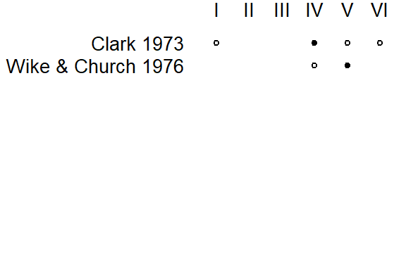
5 Statistical models: Integration of research objectives and data structure
5.1 The inherent flexibility of corpus data analysis
To start with, we need to distinguish between three components of statistical work: (i) the research question(s) motivating the analysis, (ii) the statistical analysis of the data and (iii) the linguistic interpretation of the results of this analysis. While these three aspects are intrinsically linked, the research question assumes a primary role. The analysis responds to the objectives of the study and aims to produce results that serve as an appropriate basis for interpretation.
In experimental research, these three aspects form a coherent whole and are linked via the research design: Based on the specific question to be addressed, an experimental design and data collection plan is devised. The design aims to strike a balance between efficiency and validity considerations, and the analysis of the data usually follows from the design.
In corpus-based work, the situation is different. Since we are using data that is already there, we have much less room for maneuver in terms of study design. As a result, the interplay between these three aspects – research question, statistical analysis, linguistic interpretation – is fluid. Sometimes, our engagement with the data at hand will force us to modify our research questions and subsequent interpretation. If the data may turn out to be too sparse to support intended interpretations or levels of generality, we restrict our research question either by focusing it or by narrowing the scope of the intended interpretations. In corpus-based work, there is much more feedback going on between these three aspects. This feedback is mediated by information coming from the data and our background knowledge of a particular research area.
Corpus data analysis therefore often involves navigating back and forth between these three components and making adjustments in the light of the data. The aim is to ensure that the linguistic interpretations we are distilling from our data have a sufficient empirical footing. To make appropriate adjustments, we must have some knowledge about the basic elements of statistical analysis, and the consequences of certain decisions. This means that data-analytic skills required for corpus data analysis are quite different compared to those that are necessary to analyze experimental data. Using the data to make informed decisions during analysis and knowing how these decisions affect the conclusions that are warranted by our analysis requires statistics and science to go hand in hand.
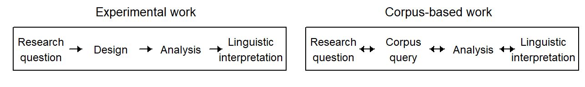
5.2 Data structure and model specification
The specification of a model for data analysis requires careful negotiation between our research objectives (see Chapter 2) and the structure and information in our data (see Chapter 4). The systematic component, which represents the linguistic variables that are of primary concern, must be related to the structural component, which represents the hierarchical layout of a set of corpus hits. The way in which these two components of data structure are combined can be the subject of heated debate. The underlying research objectives can only provide some guidance here.
Once we have drawn for our set of corpus data a plot plan of all structural and systematic factors, the existing relationships among the factors can be used to construct a model. Thus, from the crossing and nesting relationships that hold between factors, we can derive a set of parts that may be included in our model specification. In regression models, these parts correspond to terms in the model. The full set of terms can be considered the ceiling in terms of model complexity, since it will include all terms that can, in principle, be justified on the basis of the plot plan, or data layout. We will refer to such a model as the full model. It is rarely reasonable to go ahead and work directly with this full model, since the data may not provide enough information to respond adequately to this level of complexity. If the data cannot meet the demands of a complex model, the precision and validity of estimates and inferences can deteriorate.
On the other hand, the full model also provides us with a reference point for model interpretation. Its form, i.e. the set of terms it includes, instantiates the scope of inference for model-based estimates. Thus, the distinction between broad and narrow inference has concrete consequences for the terms in the model. By adding and removing certain parts, we can navigate back and forth between different levels of generality. The full model tends to be overly ambitious in the sense that it sets its inferential targets quite broadly. Broad inferences, however, rely on adequate data. The specification of a sensible model hinges on a close consideration of the informational content of the data and our knowledge of the research area. It is often sensible to reduce model complexity. The important point, however, is that such reductions entail changes in the inferential meaning of the model output by restricting the scope of our inferences. These simplifications often shift the statistical grounds for inference from broad to narrow, and therefore entail certain constraints on generality. Such simplifications may be made to bring a model in line with our research objectives, or they could be emphatically suggested by the data, which may provide feeble grounds for the intended level of generality.
A sensible and constructive approach to model specification, then, is to ask what consequences certain changes to our model have for the meaning that is transported by a given statistical inference. We have discussed the critical distinction between broad and narrow inference, and in fact modeling decision often boil down to this difference: Many modeling decisions, especially about how the structural component should be represented, are decision about the scope of inference, i.e. broad vs. narrow inference.
The controversial issue is whether the structural component can and should represent the full data layout, or whether certain simplifications are necessary or even desirable. Given that this issue has not been fully resolved across the experimental disciplines, which usually deal with relatively clean data architectures, it seems unlikely that consensus may be reached in domains dealing with observational data, which create much more complex and untidy data arrangements.
As a result, it is not our aim to advocate, or prescribe, a certain approach to corpus data analysis. Instead, we will try to make clear what consequences certain data-analytic decisions have for the interpretation of model-based inferences. Our strategy will be to think about a model formulation that captures all of the features that we recognize in our plot plan for the data. Often, the resulting model is too complex to be useful. This means we have to make deliberate simplifications to our model. A simplification, then, is the reduction of the structural component of our model. Every simplifying move entails changes to the conclusions we draw in the end. We will try to make clear how changes in the structural component narrow the scope of our statistical conclusions and how we can learn from the data whether a certain simplification is warranted. Importantly, we will also try to warn against biases that may arise from uncareful reductions of the structural component.
5.3 Fixed vs. random factors
An important distinction in statistical analysis is that between fixed and random effects. From a purely statistical perspective, the difference between fixed and random effects can be explained and illustrated in a relatively straightforward way. In statistical theory, the difference between the two types is defined for abstract, idealized circumstances. The difference between these artificial settings is not difficult to grasp. What may cause headaches, instead, is the question of which of the two best represents the empirical situation at hand. Sometimes, a concrete data setting may be situated somewhere along the continuum between these idealized end points.
This section aims to provide some orientation for the analysis of corpus data. We will first consider the basic statistical ideas underlying the distinction between fixed and random effects. This will allow us to understand the statistical meaning that is carried by fixed and random effects. Then, we will connect this statistical meaning to the our research objectives, specifically, the difference between broad and narrow inference. This is followed by a survey of how fixed and random effects are described in the methodological literature. This overview helps us characterize prototypical instances of fixed and random effects. Finally, we will have a look at some factors in linguistic study that fall somewhere in between these prototypes.
5.3.1 The basic statistical idea
The general idea surrounding the distinction between fixed and random factors can be illustrated with the help of the two sampling situations that were discussed in Section 3.3. We therefore again turn to simulation to clarify inferential meaning.
Recall that, in stratified sampling, sampling occurred from the exact same set of groups. Each average across the five groups was calculated from the ame five groups. In other words, the factor Group was fixed. As we saw in Figure 3.2, sampling variation occurred at the level of each group (see colored sampling distributions at the right margin). The uncertainty surrounding the average over the five groups therefore only reflects sampling variation resulting from selecting a sample of units from each group.
In cluster sampling, on the other hand, we were not dealing with a fixed set of five groups. Rather, the five groups that happened to end up in our study were themselves a random sample from a larger population of groups. This is why, in this situation, the factor Group is called random because its levels (i.e. the individual groups) are a random sample from a population. Each average across the five groups is therefore computed based on a different selection of units. This means that there is an additional source of sampling variation in this set-up. The sample-to-sample variability of our average is also affected by this sampling process at the level of the population of groups.
The fixed-effect average is therefore sensitive to only one source of sampling variation. Its uncertainty interval reflects this source, and provides adequate coverage for long-run sampling from exactly these five groups. The random-effect average, on the other hand, is affected by a second source of sampling variation. Its uncertainty bounds incorporate both sources of sampling variation and provide adequate coverage for long-run two-stage sampling processes.
5.3.2 Tools for broad vs. narrow inference
multilevel model has greater capacity for generality random intercepts are treated as coming from a higher-level distribution that relates to a larger underlying population
In a concrete data-analysis setting, we may find ourselves in a situation where our tokens can be broken down into 5 meaningful groups, similar to the simulation setting in the previous chapter. We then need to decide whether we are interested in a fixed-effect or a random-effect estimate of the average over the 5 groups.
If we are interested in only the five groups at hand, we do not intend to generalize beyond these, to other unobserved groups (perhaps because there are none). We would then treat Group as a fixed factor. The resulting fixed-effect inferences for the average over the five groups correspond to the filled circles in Figure 3.2, which also illustrates the long-run conceptualization of these statistical inferences. In terms of the scope of inference, this can be considered a case of narrow inference, since we are not reaching beyond the 5 groups at hand. In regression modeling, narrow-inference estimates are obtained via fixed effects.
It may also be the case that the five groups at hand are not of particular interest in themselves, but serve to represent a larger population of groups. This means that we would consider the data set as having been generated by a two-stage sampling process – a sample of groups from a population of groups, and then a sample of observations from each sampled group (i.e. samples withing samples). In this case, we would treat Group as a random factor, to cushion our estimates with appropriate uncertainty intervals – i.e. error bars that reflect both sources of sampling variation. The random-effect inferences compare with the filled black circles in Figure 3.3, which portray the long-run meaning of the statistical inferences. Since we are extending our statistical conclusions to the population level, we are making broad inferences. In general, broad-inference estimates absorb multiple sources of sampling variation. In regression modeling, broad-inference estimates require the specification of appropriate random effects, which provide the statistical grounds for extending the scope of inference.
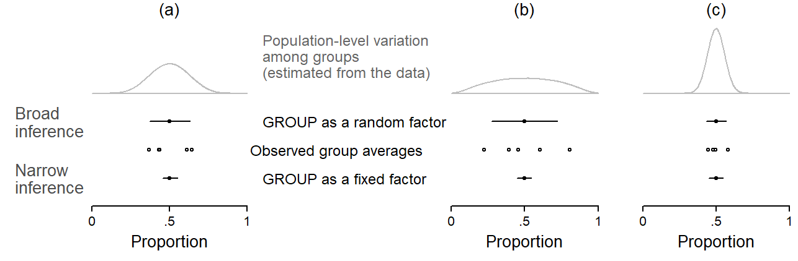
Figure 5.2 juxtaposes broad-inference estimates (based on a random-factor analysis of Group) and narrow-inference estimates (based on a fixed-factor analysis of Group). Let us first consider panel (a). The empty circles show the observed proportions of the five groups. Below these, the narrow-inference estimate of the average across the five groups is shown. Above these, we see the broad-inference estimates. To produce broad-inference estimates, the model looks at the observed variation among the sampled groups. It uses the dispersion of scores to measure the amount of between-group variation. It does so by taking a measure of variability such as the standard deviation. This measure is then used for an approximate calculation of the population-level variation among groups. The distribution among groups in this projected population is shown by the density curves at the top. The population is sketched so as to form, in terms of variability, the most likely constellation of units from which the sample at hand may have been drawn. The estimated population-level measure of variability, along with the sample size at hand, is then incorporated into the broad-inference estimate.
In panel (b), the five groups differ more with regard to the outcome proportions – the variation among groups is larger. This leads to a different projection of the population-level variability among groups: The grey density curve is wider. This additional variability is worked into the broad-inference estimate, which receives wider uncertainty bounds. Note that the fixed-effect estimate does not change. Panel (c), on the other hand, features a set of groups that are quite homogeneous. Accordingly, the projected population likewise shows smaller between-group variability and the broad-inference estimate is therefore tighter.
It is instructive to refer back to Figure 3.3. The adjusted uncertainty intervals, shown at the far right in panel (c), are broad-inference estimate constructed based on the sample of 5 groups. Notice how the width of the uncertainty intervals varies with the variability among the observed groups that inform the population projection, which in turn feeds into the broad-inference estimate. Wide intervals results form heterogeneous samples, and tight intervals result from homogeneous samples. Note, in particular, the estimate with the tightest confidence interval. It is located roughly in the middle of the line-up, and underestimates the true proportion by about .10. Its uncertainty interval badly misses the target. Looking at panel (a), we see that the five groups happened to be very similar in this particular simulation draw. The between-group variability was therefore small, which led to an underestimate of the population-level variability among groups. This yielded an overly optimistic broad-inference estimate.
The modification of a statistical model to produce broad and narrow inferences is one of the roles of fixed vs. random effects in regression modeling. As we will see further below, fixed and random effects also have other functions in data analysis. A point we wish to stress here is that the choice between these two ways of representing a grouping variable may largely depend on our research objectives, that is, the level of generality that we wish to attach to an estimate.
5.3.3 Decisions
When using regression modeling for data analysis, we (implicitly) decide for each predictor whether it should be treated as fixed or random. It is fair to say that these decisions have stirred debates and controversies in the literature. The controversy arises in the application of these statistical concepts to actual data analysis settings, and discussions therefore take place in the methodological realms of substantive disciplines. Statistical theory can unfortunately only be of some help. As discussed in the previous section, the input provided by statistical theory is this: Fixed-effect estimates generate narrow inferences that do not reach beyond the specific groups (or units) at hand. Random-effect estimates, on the other hand, embrace multiple sources of sampling variation and therefore use the information in the data to generate broad inferences, thereby reaching beyond the particular set of groups (or units) observed.
In a concrete research setting, the choice between fixed and random effects cannot be made on statistical grounds. It rests on subject-matter considerations and the researcher’s objectives. Drawing a line between fixed and random effects therefore proves to be difficult without a concrete context in mind. Nevertheless, the way in which the categorization is made in the literature is instructive, since authors vary in terms of the distinctive features they foreground (see Gelman (2005)). The distinction can be made along several dimensions. We will try to relate these to our discussion of research objectives.
It is also useful to consider the fixed-random dichotomy from the viewpoint of prototype theory. We can state the prototypical features of each category, while allowing for fuzzy category boundaries. Prototypes then represent the two endpoints of a continuum from fixed to random, with many factors sitting comfortably in between these poles. Real-world examples of prototypical representatives of each type can serve as heuristic reference points in less familiar settings, where we are unsure about the distinction and where we need some guidance for our reasoning.
Our discussion of distinctions, categorizations, and prototypes should not distract from the most critical point. Both options provide valid statistical conclusions – but they answer different questions. The focus should therefore not be so much on whether a certain data-analytic decision, e.g. to set up a factor as fixed or random, is “correct”. Instead, we should be clear about the type of question answered by either approach and the meaning transported by the resulting inferences. There will be situations where both classifications are reasonable, each providing a statistical answer to a different question. In many cases, it will be reasonable to derive and compare both types of inferences.
First, we may deliberately choose to restrict the scope of our inferences by using fixed effects. This decision must resonate in the discussion of our results, and it should ideally be stated in a constraints on generality section preceeding the findings. Second, random effects do not simply “buy” you broader inferences. The inferences extend to the set of units that are represented by the sample of units in your data. So it is important to draw a line between the sampled population and the target population, which may very well differ.
We should also stress that the consequences of the distinction between these two types of predictor categories vary depending on where in the data hierarchy the predictor in question is located. In other words, sometimes the decision matters very little, sometimes a lot. We will try to offer some kind of guidance, while stressing the importance of appreciating the sensitivity of our linguistic conclusions to this decision.
5.3.4 Fixed and random factors in contrast
Fixed and random effects differ along a number of dimensions, which are shown in Figure 5.3. The grey lines indicate that each dimension spans a continuum with two endpoints that may be considered as describing prototypical features of each classification.1
1 See Rabe-Hesketh and Skrondal (2021), p. 102-104 for a helpful comparison.
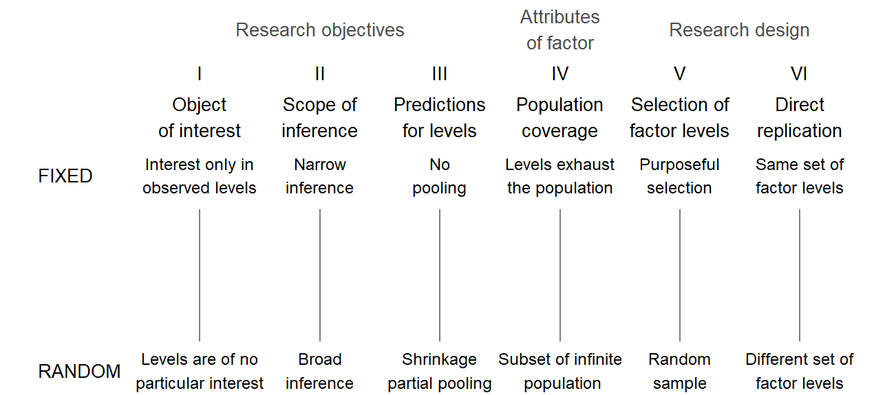
Dimension (I) asks about the status of the observed factor levels (Searle, Casella, and McCulloch 1992, 7–16; Brown and Mosteller 1991, 194–99; Underwood 1997, 199; Rabe-Hesketh and Skrondal 2021, 103–4). For fixed effects, these very specific levels, which we have observed, are of direct interest, with no concern whatsoever for any other possible versions of the factor. For random effects, the observed levels are of no particular interest in themselves; they are only relevant insofar as they tell us something about the population they represent. Factors for which no additional levels exist would naturally sit at the fixed end of the dimension. For other factors, there may be additional levels, but we may have deliberately restricted our focus to the set of versions at hand, and chose to disregard other classes.
Dimension (II) is related to our discussion in Chapter 2, where we talked about the intended range of validity, or inference space, for our statistical conclusions (Eisenhart 1947, 20; Cornfield and Tukey 1977, 913; Anderson and McLean 1974, 57–59). If statistical uncertainty statements are to be applicable only to the observed set of levels, we would represent the factor as fixed. If, instead, we wish to extend our conclusions, on statistical grounds, to a larger population of factor levels, from which the versions at hand can be considered a representative set, we would designate this factor as random.
Dimension (III) concerns prediction. [; Rabe-Hesketh and Skrondal (2021), p. 103]
Dimension (IV) moves on to attributes of the factor in question. What matters here is to which extent the observed set of levels exhaust the population, i.e. whether the existing levels have been sampled completely or incompletely (Cornfield and Tukey (1977), p. 909; Wilk and Kempthorne (1955), p. 1153; Nelder (1956), p. 50). At the fixed end, there are no further levels that could (even theoretically) be of interest, simply because none exist: sampling is complete. At the random end, the number of observed levels is very small compared to the size of the population, which could in fact be infinite; samping is incomplete. There are obviously intermediate situations, and the vertical scale may be considered as indicating the share of the population that was observed, ranging from 0 (infinite population) to 1 (population exhausted).
Dimension (V) shifts the focus to research methodology; specifically, how the observed levels were selected (Eisenhart 1947, 19). At the fixed end of the continuum, the classes in our study are the result of a purposeful and determined selection procedure, with no chance element involved. The choice of levels is determined on substantive grounds, in light of our research objectives. For random factors, on the other hand, the set of levels is obtained via random sampling, a procedure that grants each level in the (potentially infinite) population the same probability of being selected. The choice of levels rests on a purely haphazard, chance process.
Dimension (VI) considers what would happen in a direct replication of the study, i.e. a repetition with data collected under similar circumstances (Eisenhart 1947, 20). For fixed effects, it would be typical for a prospective replication to include the same set of levels as the original study. For a random factor, on the other hand, direct replications would observe a new set of levels.
Nelder (1977: 50-51) distinguishes between two kinds of random term: (i) a component of error, where no interest attaches to individual values, only their mass behavior; and (ii) effects of interest which is nevertheless specifies in terms of a sample from a population.
There may be additional considerations when a model also includes level-1 predictors. (Rabe-Hesketh and Skrondal 2021, 176–78)
5.3.5 Fixed and random factors: Prototypes
We can now think about prototypical exemplars for each category. Such representatives would be located at (or very near) the extreme ends of the vertical dimensions. Let us start with fixed effects. We will try to name factors from different research contexts:
- Place of articulation
- Word class
The prototypical example of a random factor is the speaker. Individual speakers are almost never of direct substantive interest (I), and inferences therefore usually aim at a broader range of validity than the set of individuals observed (II). Informants could, in principle, be selected via techniques that may approach that of random sampling (III). They are usually a small subset of the population they represent (IV).
Let us also consider some intermediate cases: GENRE.
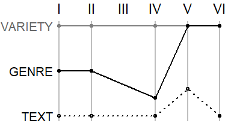
Keppel and Wickens (2004, 533) state that “fixed and random factors do not exist in the world, but are interpretations we impose when designing and analyzing a study”.
5.3.6 Three functions of random factors
- To specify the appropriate source of variation against which a systematic factor should be compared (Nelder 1956, 51).2
- To extend the generality of a particular estimate on statistical grounds (Keppel and Wickens 2004, 533)
- To obtain more stable estimates for the individual levels of the factor.
- As a general shrinkage or regularization device.
2 In the DoE literature this corresponds to the choice of the right error term, or the appropriate mean square (MS) which should appear in the denominator of the F-ratio.
5.3.7 Special considerations in observational data settings
In experimental work, the researcher may build an appropriate design based on their research objectives. The intended scope of inference has clear implications for the design and analysis of the experiment (Lorenzen and Anderson 1993, 8–9)
5.4 The structural component: Fixed vs. random factors
5.4.1 Clustering by source
Considering the delineation of fixed and random factors in the previous section, Speaker clearly classifies as a random factor. Only if we decide to deliberately restrict our inferences to the set of speakers observed does it make sense to treat Speaker as a fixed factor. In psychology, it is fairly routine practice to treat human subjects as a random factor. So-called within-subject designs correspond to our setting where a token-level predictor occurs in the presence of clustering by source. This token-level predictor is assessed against its consistency across subjects.
Illustration with the (ING) data
We will use the (ING) data to illustrate the consequences of treating speaker as a fixed or random factor. We will also consider two speaker-level predictors, Date of Birth and Sex. We will start with a random-factor approach, to obtain broad-inference estimates. The resulting statistical inferences therefore extend to the sampled population, i.e. the population represented by the speakers in Forrest’s study. Thus, we are extending our statistical conclusions to unobserved speakers from this population.
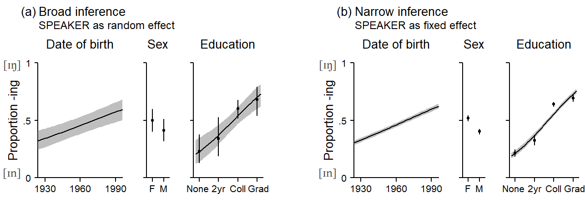
These kinds of regression plots go by different names, including predictive margins (e.g. Stata).
Rabe-Hesketh and Skrondal (2021), p. 156-157 rite that in Stata, a distinction is made between adjusted predictions, where you hold covariates at specific values, and predictive margins, where you evaluate covariates at their means.
Speaker as random s. fixed effect Speaker-level factor
5.4.2 Clustering by lexical unit
In certain settings, we may chose not to consider the lexical items in our corpus study as a sample. In general, we have the option of treating words as if they were a sample from some population to which we wish to make inferences. Whether this makes sense depends on your inferential objectives. If your interest is in making inferences about, say, present-day British English, you may chose to restrict your attention to the set of lexemes that instantiate a certain construction or structure in this specific language (variety). This makes sense, of course. You would then treat words as fixed effects.
You could also conceptualize your inferences as extending to the systematic forces that produce certain languages or language varieties. Then, it makes sense to consider the set of lexemes that happens to have emerged to instantiate a certain construction in a particular language as a sample result of this process. Your inferential objectives are broader.
Which perspective you chose to take is up to you. There are statistical option matching each perspective. If your interest is restricted to the set of words in your data, you treat these words as a fixed effect. If you consider them as a sample from a certain system, they would be treated as random. Which of these conceptualizations makes more sense is a matter of debate. We will juxtapose these two perspectives and resulting differences in the statistical conclusions later on. Sometimes, we may have to resort to practicable solutions. If we are forced to choose a certain analysis strategy, it helps to have some idea about how this affects the statistical summaries we end up with.
In some cases, there may simply not be enough data points to reliably handle rare words. This may then affect our comparisons between groups of words. Sparse data bias can be a problem. Then, a random.effects approach may be more feasible.
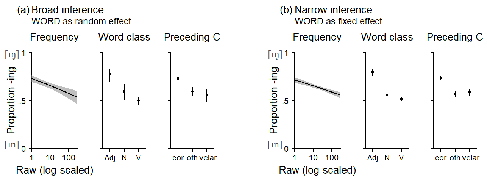
5.5 The fixed-vs.-random effects debate in language research
In data situations where Subject and Item are crossed - that is, where every subject encounters every item - the statistical analysis may proceed in different ways. The choice of which strategy is “appropriate” has received considerable attention in the psycholinguistic literature. We will first take a closer look at how the controversy has unfolded in this subfield of language research and then transfer the implications of the arguments raised to corpus-based observational work. It is important to clearly separate two aspects of this debate: (i) the conceptual form of the statistical analysis and (ii) the choice of statistical procedure for its implementation. Debates about the conceptual analysis form have been much more controversial, because they (must) take into account not only aspects of data structure but also the nature of the linguistic phenomenon studied as well as study design and the researcher’s objectives. It is also the more important aspect of the debate, since the statistical uncertainty attached to the results varies greatly depending on the general analysis strategy. The same conceptual form of analysis may then be implemented using different procedures, and the choice between them essentially boils down to purely statistical arguments (such as the Type I and II error rates, or the ability of the procedure to handle unbalanced and/or missing data). These issues can be settled more easily using, say, simulation studies that compare the performance of different procedures.
5.5.1 The debate in psycholinguistics
We will divide our summary of the fixed-vs-random-effect debate in psycholinguistics according to the two aspects just mentioned - conceptual form of analysis and choice of statistical procedure. Before we go further, however, let us call into mind key features of data derived from psycholinguistic experimentation.
- The data are balanced: Each subject and each item contributes the same number of tokens. (2a) The experimenter selects (or samples) subjects from a speaker population. (2b) The choice of subjects may be stratified (e.g. by age and gender). (3a) The experimenter selects (or samples) items from a language population. (3b) The choice of items may be stratified (e.g. by frequency and word class)
- Randomization may be applied to token-level predictors.
5.5.1.1 Illustrative data layouts
To make sense of the controversy surrounding the decision of whether to treat SUBJECT and/or ITEM as fixed or random factors, we must understand the scientific contexts within which scholars have gone on record with regard to this issue. We will concentrate on two data situations, which are sufficiently general to allow for extrapolation to other settings. In both scenarios, Subject and Item are crossed. This means that every subject encounters every item. A further commonality between design (1) and (2) is that Subject is crossed with Treatment. If Treatment has two levels (A and B), every subject encounters both treatment levels. This means that Treatment varies within Subject, and in psyhcologinguistics this is usually referred to as a within-subjects design.
The difference between the two designs is the relation between Item and Treatment. In design (1), Item is nested within Treatment. As illustrated in …, this means that a particular item either appear under treatment A or treatment B. This is illustrated in Figure 5.7: While subjects (the rows) respond to both treatment A and B, items are separated by treatment. Items 1-4 appear with treatment A, item 5-8 with treatment B. Such a data layout is typical for situations where the factor of interest is an attribute of items (e.g. word class, concreteness, animacy, frequency class, etc.). Note how Subject is crossed with Treatment: Each row cuts across both treatments.
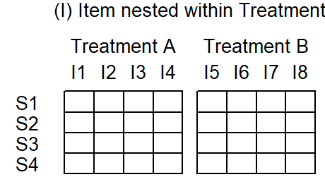
In design (2), on the other hand, Item is crossed with Treatment. This means that each item appears with both treatment A and treatment B. This data layout is shown in Figure 5.8. In this design, then, Treatment is both a within-subject as well as a within-item variable.
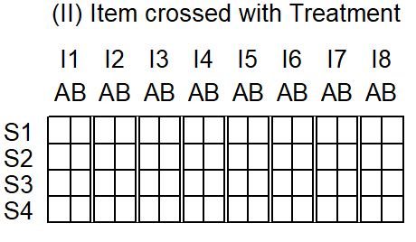
For illustration, we draw on constructed data sets from Raaijmakers, Schrijnemakers, and Gremmen (1999, Table 2, p. 418) for design (1) and Raaijmakers (2003, Table 6, p. 148) for design (2).
Data description
5.5.1.2 The conceptual form of analysis
The discussion began in the domain of psycholinguistics, with a paper by Coleman (1964). This paper concerned psycholinguistic experimentation, where subjects responded to a set of items (“stimuli” or “materials”), and treatment factor varied within item. Coleman (1964) noted that psycholinguistic work in those days only consider generalizability of findings across subjects, but never considered the question of generalizability across items. He rightly argued that statistical inferences then only extend to the set of items used in the experiment. However, he arguably went too far when stating that “investigations of verbal behavior are scientifically pointless if their conclusions have to be restricted to the specific materials used in the experiment” (Coleman 1964, 19). Two aspects are critical here. First, in this area of research (psycholinguistic experimentation), generalization across items may indeed be the intention of the researcher. Further, Coleman (1964, 222–23) talks about situations where items “logically represent a sampling variable”.
“double analysis” [Coleman1964, p. 223]
An influential paper by Clark (1973) led to the widespread recognition of the issue. The paper was concerned with experimental work and offered a detailed discussion of the statistical (re)analysis of two studies, where the predictor of interest was crossed with SUBJECT and (i) nested in ITEM or (ii) crossed with ITEM. Clark (1973) demonstrated that the choice of whether ITEM is treated as a fixed or random factor altered the binary interpretation of the resulting p-value, when judged against a .05 significance threshold. The paper also discusses alternative design and analysis strategies. As for the question of when a researcher should choose to represent ITEM as a random factor, Clark (1973) [pp. 348-349] gives a simple answer: “whenever the language stimuli used do not deplete the population from which they were drawn”. The question of whether items were sampled randomly is “in a sense, secondary”. Clark (1973) therefore emphasizes one specific dimension of the fixed-vs.-random distinction. Since he backgrounds the role of random sampling, he appropriately considers as the (immediate) target of inference the “language population sampled” (1973, 346), i.e. “the population defined by [the] non-random sampling procedure” (1973, 349). Clark (1973, 349) notes that if inferences do not legitimately extend to the sampled population, there is “no possibility of generalizing […] findings to the more inclusive population”. He notes that “the non-random sampling procedure causes difficulty only later when the investigator wants to determine exactly what population he can legitimately generalize his results to”. The paper also discusses the difficulties in psycholinguistic research of drawing ITEMS at random while at the same time balancing materials across relevant properties such as frequency, word class, etc.
- Also discusses design issues: pay attention to number of SUBJECTS and ITEMS
- Mentions peer review as an obstacle to more appropriate reporting
- Mentions that ITEM is different from SUBJECT since individual items may be of direct interest (dimension I) (Clark 1973, 354) and are repeatable (dimension VI) (Clark 1973, 355, footnote 12)
Coleman (1964) and Clark (1973) assume that researchers intend to generalize findings to a language population.
The paper by Clark (1973) made a convincing case, and its forceful recommendation was picked up readily in the scholarly community. The problem with statistical dogmas of this kind is that they offer no room to the individual researcher for careful reflection. The dramatic changes in research practice quite naturally led to critical responses to the points advocated by Clark (1973). Thus, Wike and Church (1976) raised a number of important counterpoints. Their recommendation, however, was equally categorical, as their paper closes with the suggestion “that investigators continue using fixed factor designs”. A close reading of their paper is instructive, however. We will disregard the statistical criticism directed against Clark (1973)’s proposed method for statistically generalizing to two populations and focus on the more substantive aspects. They start by raising the question of what a random effect is, and refer to “the usual definitions”, which correspond to dimensions IV and V in Figure 5.3. They emphasize the mathematical definition of random factors, which considers them as random variables. The consequence of this was illustrated in SECTION_statistical_inference. They call Clark (1973)’s definition, which emphasized dimension IV, as “unorthodox” (Wike and Church 1976, 250). Their most important point is that the kinds of generalizations researcher intend to make cannot be made exclusively on statistical grounds, but require replication. They emphasize that statistical and extra-statistical generalization must be distinguished, and note that “generality is not achieved by using one or another statistical procedure in analyzing the results of a single experiment, it arises from the scientific community’s carrying out its relentless and converging mission” (Wike and Church 1976, 253).
In the discussion of Clark (1973), KeithSmith (1976, 262) rightly states that “it does seem useful […] to consider whether, had these materials been a sample, the main effect would still be large enough to justify confidence in its reality.” He closes by say that “no one should accept [Clark’s] dogma, nor that of his critics (i.e. Wike and Church 1976). Authors will continue to be responsible for defending the generality of their findings across subjects and materials, statistically where appropriate, logically always.”
A close reading of Clark (1973) and Wike and Church (1976) shows that their points of view on permissive generalizations are quite similar. Wike and Church (1976) state that the random-effects model allows us to “generalize to larger populations for which the selected levels are typical or representative” (1976, 253), which corresponds to Clark (1973)’s “population defined by [the] non-random sampling procedure” (1973, 349). Wike and Church (1976) explicitly state that the delimitation of this population is “outside the realm of statistics” (1976, 253), and while Clark does not use the word extra- (or non-)statistical generalization, he does note the “difficulty” of delineating the sampled population.
A reconciliatory and softened summary of the early exchange on the random-vs.-fixed debate may read as follows: Clark (1973) drew researcher’s attention to the fact that the substantive generalizations they were trying to attain often involved extrapolations across two populations, SUBJECTS and ITEMS. The statistical methods they routinely applied, however, only offered statistical inferences across one of these dimensions. Accordingly, he advocated the use of an analysis strategy that would bring the statistical inference more into line with the substantive inference goals. Wike and Church (1976), on the other hand, cautioned against equating the two types of inferences - i.e. that the choice of data-analytic strategy would solve the non-statistical problems involved in generalization.
Coleman (1979) suggests that the term “random effect” be replaced with the label “generalization effect”. He also makes the sensible suggestion that editorial policies should require that results for both types of analyses, the fixed-effect and the random-effect version, should be reported. He refers to Cornfield and Tukey (1977)’s two-brides metaphor, and the suggested practice then creates bridges of varying spans. This makes a lot of sense, and we will adopt the practice of reporting both kinds of statistical summaries. However, use of the label “generalization effect” should be avoided since it encourages misconceptions [cf. Raaijmakers (2003); see …].
Wickens and Keppel (1983) offer a balanced discussion of model choice, noting that “the appropriate statistical analysis of a set of data is not absolutely determined” (1983, 297). They draw attention to the relevance of the design of a study, noting that “many investigations are ill-designed to employ Clark’s suggestion”. They demonstrate how the statistical sensitivity (power) of a design varies across features related to study design (number of subjects, number of items), and the pattern of variation in the outcome (variation among subjects, variation among items). More resources should be allocated to the clustering variable that shows more variation across units. Further, they discuss the role of item variability and item-level variables. If these are used in the selection (or stratified sampling) of materials, then they must be included into the analysis, especially if items are not well balanced across relevant classifications. In such a case, Wickens and Keppel (1983) state that “lack of a truly random-sampling scheme for materials does not prevent the random-effects model from being the most accurate and leading to the best tests” (1983, 304).
Forster and Dickinson (1976) ran simulation studies and suggested that the question of whether the joint criterion (F1 x F2) or minF/quasi-F is the ideal analysis strategy depended on the structure of variation in the data: If there is large variation among items in the overall outcome score, and if the treatment effect varies considerably across subjects, minF/quasi-F are the measures of choice. If, on the other hand, there is little variability among items, and if the treatment effects is homogeneous across subject, the joint criterion seemed a better choice. It is of interest to note that Forster and Dickinson (1976) conclude by saying that the joint criterion is “at best a stop-gap procedure”, noting that “a far better solution would be to improve the procedure for estimating the degrees of freedom of minF`” (1976, 142).
Raaijmakers, Schrijnemakers, and Gremmen (1999) note that “by the early 1980s the issue was more or less settled an researchers started to routinely perform both subject and item analyses” (1999, 419). The question of how exactly a statistical analysis is carries out had not been settled, since there are in fact a number of possibilities for including Item as a random effect into the analysis. Without going much into the details, there are basically three options. Let us consider two different study designs. In both designs, the factors Subject and Item are crossed.
- F1: By-item analysis
- F2: By-subject analysis
- F1 x F2: Joint criterion, require both F1 and F2 to be significant
- F´ (quasi-F)
- minF: an approximation to F´ (quasi-F)
What to do in situations where the selection of items is stratified? Raaijmakers (2003) notes that is depends on the degree to which matching was successful.
The form of analysis that was employed, however, failed to fully address the statistical issues discussed by Coleman (1964) and Clark (1973).
Lorch and Myers (1990) discuss the analysis of design I (Item nested within Treatment) from a regression (rather than ANOVA) perspective, and compare three analytic approaches. These are (i) averaging data over subjects and then regressing the item means on the predictor variable; (ii) implicitly treating Item as a fixed effect, i.e. excluding it from the model; and (iii) the inclusion of both Subject and Item as random factors. They recommend analysis (iii) and describe how appropriate test may be obtained by following a certain sequence of steps. Following this sequence allows the analyst to obtain, at specific steps, the appropriate error terms for the different types of predictor variables. This laborious (and error-prone) procedure is largely equivalent to a mixed-effects regression model, which yields relevant error terms based on a single model including all variables. Interestingly, Baayen, Davidson, and Bates (2008) attribute to Lorch and Myers (1990) the “random regression” approach to data based on design (I). This strategy involves fitting separate regression models, one for each subject, and then performing simple analyses of the set coefficients (e.g. whether their mean differs statistically from 0). However, it semms that Lorch and Myers (1990) use this approach mainly as an illustration of the rationale underlying by-subject analyses.
I would like to understand the stepwise regression procedure.
Baayen, Davidson, and Bates (2008; see also Baayen 2008, 259–75) demonstrate the use of mixed-effects regression for a number of different designs. Using simulation, he showed that this procedure performed at least as well as traditional analyses in terms of Type I and Type II error rates, while at the same time producing more informative analyses.
Raaijmakers (2003) deals with a number of issues, including misconceptions of what it means for a treatment effect to be statistically generalizable across items (or subjects), and what to do if the items used in an experiment exhaust the underlying language population. Here, Raaijmakers (2003) concedes that “it is indeed true that such cases violate the assumptions underlying the random effects model” [p. 148]. However, he asks researchers to consider what a valid replication of their study would or could look like. For instance, if the experiment were repeated using a different language. He notes that if it appears feasible that items could have been selected in a different way, “it is probably best (i.e., the most conservative), to treat the Item factor as random rather than fixed.” [p. 149].
Barr et al. (2013) argue for random slopes
Barr (2018) argues for generalizing over encounters, i.e. a random interaction between Subject and Item
Matuschek et al. (2017) argue in favor of model selection to balance power and Type-I error rates
5.5.1.3 The choice of statistical procedure
An early paper advocating the analysis of repeated-measures data using mixed-effects modeling is Quené and Bergh (2004), who emphasized two statistical advantages of this approach: its ability to handle missing data and sidestep the sphericity assumption.
Locker, Hoffman, and Boviard (2007)
Baayen, Davidson, and Bates (2008) then discussed the use of mixed-effects models with crossed random factors.
Quené and Bergh (2004) argue that items should be considered as nested under subject. This form model assumes, with regard to a specific item, no commonalities among subjects - i.e. that each speaker responds differently the this item. An intermediate solution is to include an additional random intercept for the Subject-by-Item interaction (cf. Barr 2018).
5.5.2 Analysis of illustrative data
5.5.2.1 Design (1)
By-subject analysis: F1
As explained by Baayen (2008, 263–64), the by-subject analysis first requires averaging over items. This step is illustrated in Figure 5.9, where items are greyed out. The analysis is therefore based on 8 scores, and each scores is an average over 4 items. Figure 5.10 shows the structure of the data. Each line represents a subject.

`summarise()` has grouped output by 'subject'. You can override using the
`.groups` argument.
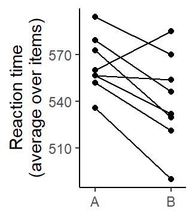
df SS MS F p
treatment 1 2008 2008 7.41 0.0297
error(within) 7 1897 271
error(subject) 7 6563 938 The mixed-effects regression version of the by-subject analysis is the following. It yields the same value for F1.
df SS MS F
treatment 1 2008 2008 7.41By-item analysis: F2
As illustrated by Baayen (2008, 263–64), the by-item analysis first requires averaging over subjects. This step is illustrated in Figure 5.11, where subjects are backgrounded. The analysis is therefore based on 8 scores, and each scores is an average over 4 subjects. Figure 5.12 shows the structure of the data. Each point represents an item.
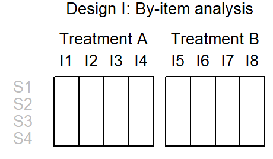
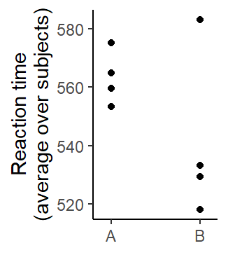
df SS MS F p
treatment 1 1004 1004 2.17 0.191
error 6 2772 462 Joint criterion
If we were to use the joint criterion, we would declare the difference between treatments A and B statistically significant if both the by-subjects analysis (F1) and the by-item analysis (F2) yielded a statistically significant effect for Treatment. While the by-subjects p-value turned out to by smaller than the conventional .05 mark (p = .03), the by-item p-value failed to reach this threshold (p = .19).
Quasi-F and minF
Clark (1973) proposed \(minF^\prime\), a simple approximation to quasi-F (or pseudo-F), using the following formula:
\[ minF^\prime = \frac{F1 \times F2}{F1 + F2} \]
For design (1), \(minF^\prime\) is 1.678
Warning in anova.lm(m): ANOVA F-tests on an essentially perfect fit are
unreliableAnalysis of Variance Table
Response: RT
Df Sum Sq Mean Sq F value Pr(>F)
subject 7 26252 3750 NaN NaN
treatment 1 8033 8033 NaN NaN
item 6 22174 3696 NaN NaN
subject:treatment 7 7587 1084 NaN NaN
subject:item 42 4209 100 NaN NaN
Residuals 0 0 NaN Analysis using mixed-effects model
lmer(formula = RT ~ treatment + (1 | item) + (treatment | subject),
data = design_1)
coef.est coef.se
(Intercept) 563.31 12.38
treatmentB -22.41 17.10
Error terms:
Groups Name Std.Dev. Corr
item (Intercept) 21.20
subject (Intercept) 17.39
treatmentB 22.18 0.08
Residual 10.01
---
number of obs: 64, groups: item, 8; subject, 8
AIC = 543.7, DIC = 558
deviance = 543.6 Analysis of Variance Table
npar SS MS F
treatment 1 172 172 1.725.5.2.2 Design (2)
By-subject analysis (F1)
`summarise()` has grouped output by 'subject'. You can override using the
`.groups` argument.
df SS MS F p
treatment 1 1864 1864 1157 5.59e-05
error(within) 3 5 2
error(subject) 3 1 0 By-item analysis (F2)
`summarise()` has grouped output by 'item'. You can override using the
`.groups` argument.
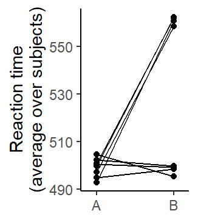
df SS MS F p
treatment 1 3729 3729 5.97 0.0446
error(within) 7 4373 625
error(item) 7 3647 521 Joint criterion
Since both the by-subjects analysis (p = .00) and the by-item analysis (p = .04) yielded a statistically significant effect for Treatment, the effect of Treatment would be declared statistically significant based on the joint criterion.
Quasi-F and minF
Clark (1973) proposed \(minF^\prime\), a simple approximation to quasi-F, using the following formula:
\[ minF^\prime = \frac{F1 \times F2}{F1 + F2} \]
For design (2), \(minF^\prime\) is 5.939.
For quasi-F, two different formulas exist. The first is due to Scatterthwaite (1946), the second is a modification proposed by Cochran (1951), which generally works better (cf. Cobb 1997, 597).
Warning in anova.lm(m): ANOVA F-tests on an essentially perfect fit are
unreliableAnalysis of Variance Table
Response: RT
Df Sum Sq Mean Sq F value Pr(>F)
subject 3 4 1 NaN NaN
item 7 14589 2084 NaN NaN
treatment 1 14915 14915 NaN NaN
subject:treatment 3 39 13 NaN NaN
item:treatment 7 17491 2499 NaN NaN
subject:item:treatment 42 1467 35 NaN NaN
Residuals 0 0 NaN \[ F^\prime_{Scatterthwaite} = \frac{MS_T}{MS_{T \times I} + MS_{T \times S} - MS_{T \times I \times S}} \]
\[ \frac{14915}{2499 + 13 - 35} \]
[1] 6.02\[ F^\prime_{Cochran} = \frac{MS_T + MS_{T \times I \times S}}{MS_{T \times I} + MS_{T \times S}} \]
\[ \frac{14915}{2499 + 13 - 35} \]
[1] 5.95Degrees of freedom Scatterthwaite:
Numerator: df of Treatment
Denominator:
\[ \frac{(MS_{T \times S} + MS_{T \times I} + MS_{T \times S \times I})^2}{\frac{{MS_{T \times S}}^2}{df_{T \times S}} + \frac{{MS_{T \times I}}^2}{df_{T \times I}} + \frac{{MS_{T \times S \times I}}^2}{df_{T \times S \times I}}} \]
[1] 6.88Degrees of freedom Cochran:
Numerator:
\[ \frac{(MS_{T} + MS_{T \times S \times I})^2}{\frac{{MS_{T}}^2}{df_{T}} + \frac{{MS_{T \times S \times I}}^2}{df_{T \times S \times I}}} \]
Denominator:
\[ \frac{(MS_{T \times S} + MS_{T \times I})^2}{\frac{{MS_{T \times S}}^2}{df_{T \times S}} + \frac{{MS_{T \times I}}^2}{df_{T \times I}}} \]
Analysis using mixed-effects model
boundary (singular) fit: see help('isSingular')lmer(formula = RT ~ treatment + (1 | item) + (1 | subject), data = design_2)
coef.est coef.se
(Intercept) 499.06 6.16
treatmentB 30.53 4.65
Error terms:
Groups Name Std.Dev.
item (Intercept) 14.74
subject (Intercept) 0.00
Residual 18.59
---
number of obs: 64, groups: item, 8; subject, 4
AIC = 567.8, DIC = 578
deviance = 568.0 boundary (singular) fit: see help('isSingular')Analysis of Variance Table
npar SS MS F
treatment 1 14915 14915 43.2boundary (singular) fit: see help('isSingular')Analysis of Variance Table
npar SS MS F
treatment 1 230 230 6.55boundary (singular) fit: see help('isSingular')Analysis of Variance Table
npar SS MS F
treatment 1 14915 14915 43.2boundary (singular) fit: see help('isSingular')Analysis of Variance Table
npar SS MS F
treatment 1 230 230 6.55- Leonard - Orchard 1996
- Baugh 2001
- Quene - van den Bergh 2003 [!]
- Gorman 2009
- Smith 2009
- Janssen 2012
- Gorman & Johnson 2013
- Park et al. 2020
- Frossard - Renaud 2020
- DeBruine - Barr 2021 [!]